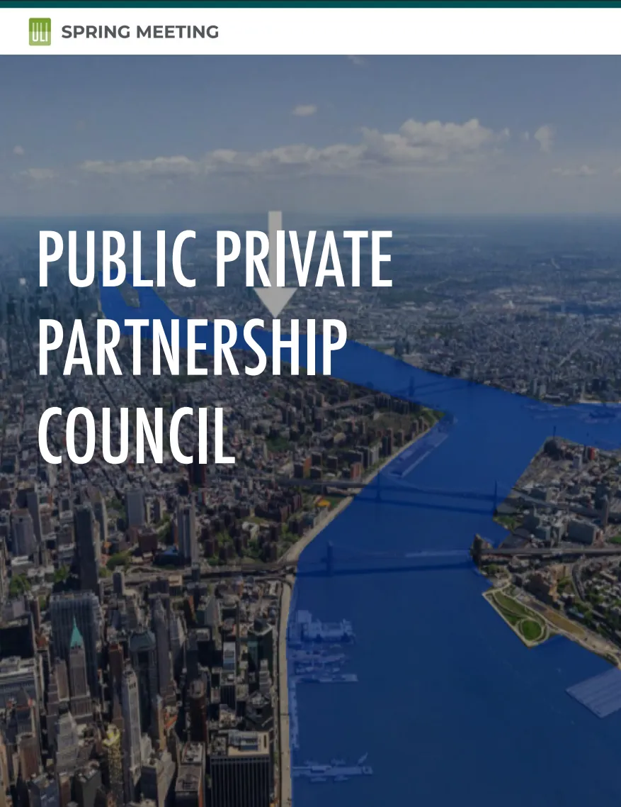

Public Private Development
According to the Urban Land Institute, Public Private Partnerships ("PPP" or "P3") are ventures formed jointly by a government or quasi-governmental organization with one or more privately owend and operated organizations. Their aim is to meet public needs that either partner may have identified -- but neither can meet by acting alone due to insufficient funds or inadequate capabilities. Successful partnerships have four defining characteristics: the partners share responsibility for policy-making; the partnership uses property that is owned or will be owned by the government; the partners share in the risks and rewards of the project; and the public sector bases its selection of private partners mainly on qualifications rather than price.